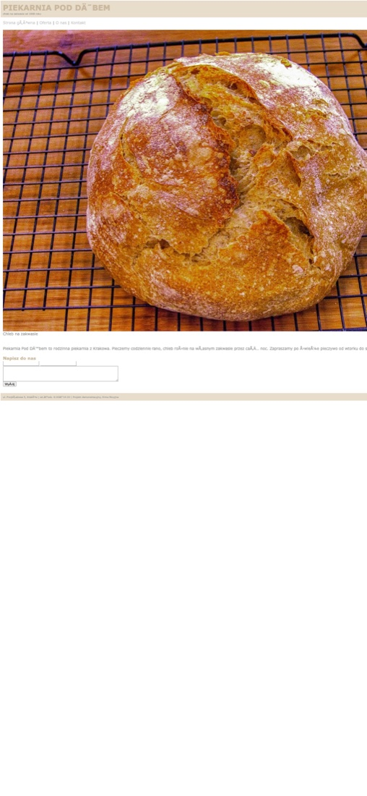
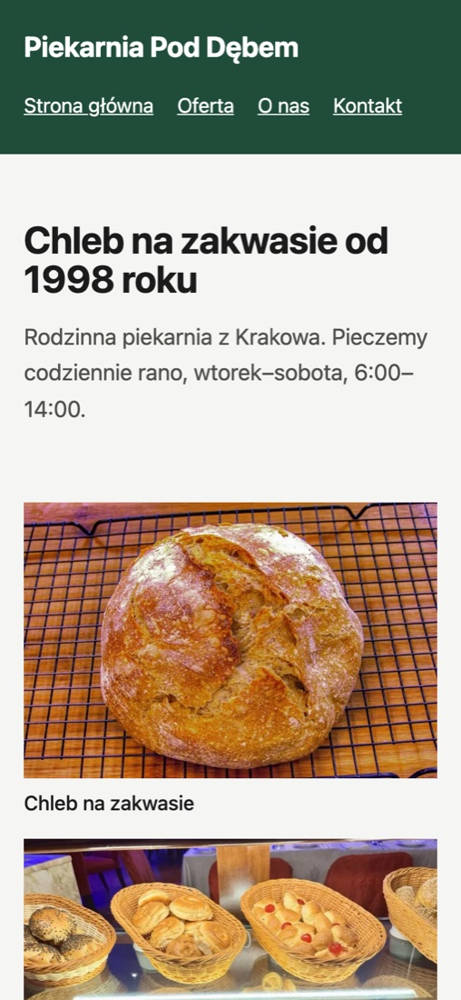

Zepsuta strona typowej małej firmy i to, co z niej zrobiłem bez zmiany treści. Firma jest fikcyjna, błędy są prawdziwe i spotykane na co dzień.
7599
Wydajność
45100
Dostępność
82100
SEO
4,9 MB303 KB
Rozmiar strony
25,8 s2,0 s
Wczytanie głównego zdjęcia
symulowane łącze komórkowe88100
Dobre praktyki
Lighthouse 13, tryb mobilny, test lokalny z symulowanym spowolnieniem. Wyniki przed i po z jednego uruchomienia, każdy kolejny może różnić się o kilka punktów.


Strona miała stałą szerokość 980 px i brak ustawienia dla małych ekranów, więc na telefonie była zmniejszona albo ucięta. Teraz układ dopasowuje się do ekranu.
Brak deklaracji kodowania zamieniał „Dąb” w „DĘB”. Dodana, więc ą, ę i ó wyświetlają się poprawnie na każdym urządzeniu.
Trzy zdjęcia ważyły razem 4,9 MB. Teraz są w WebP w dwóch rozmiarach i przeglądarka bierze mniejszy na telefonie. Mają podane wymiary, więc układ nie skacze, a niewidoczne ładują się dopiero przy przewijaniu.
Formularz wysyłał dane na nieistniejący adres, a skrypt przy ładowaniu wyrzucał błąd. Teraz pola mają etykiety i komunikaty o błędach, a po wypełnieniu otwiera się gotowy mail.
Tekst był jasnoszary na białym, z kontrastem około 2:1. Teraz jest ciemny, z kontrastem powyżej wymaganych 4,5:1.
Zdjęcia dostały opisy, strona język i opis dla wyszukiwarki, a link „kliknij tutaj” zamienił się w opisowy. Układ w tabelach został zastąpiony zwykłym, czytelnym HTML-em.